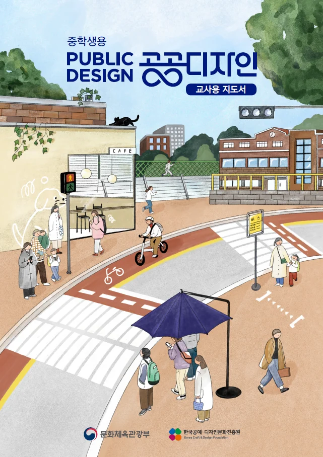
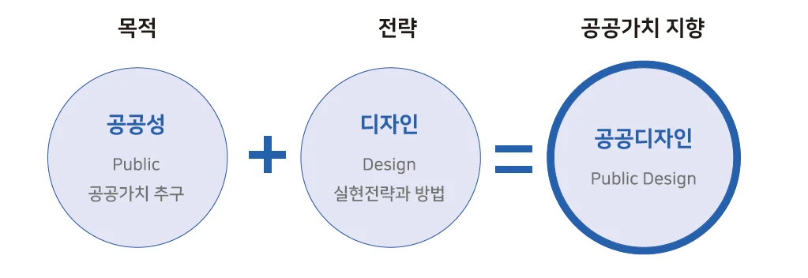
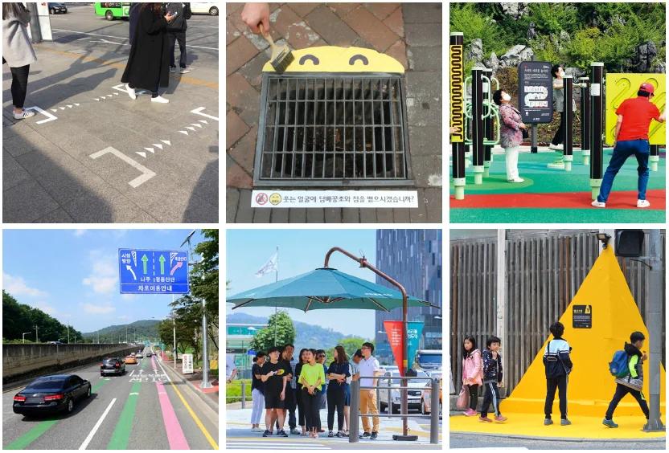
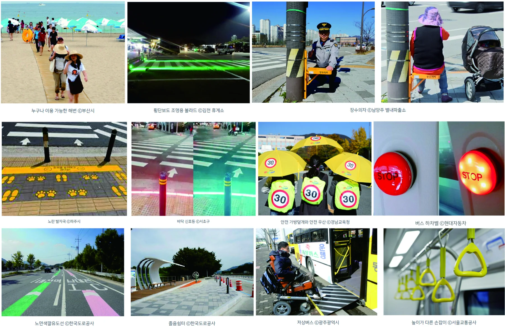
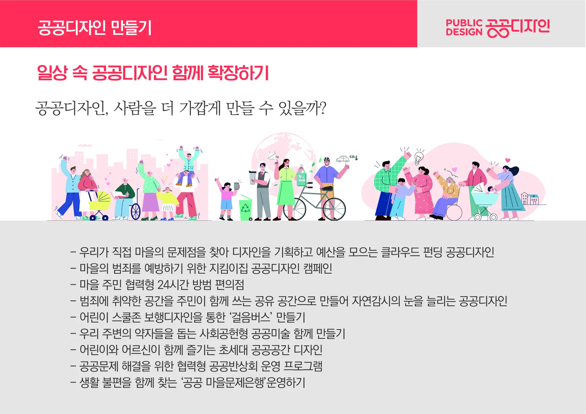

사람과 사회를 변화시키는 공공디자인 교육 — 공공디자인 교육은 왜 필요할까
[기획] 사람과 사회를 변화시키는 공공디자인 교육
공공디자인 소식지 제37호(2023. 12)
[제목]
공공디자인 교육은 왜 필요할까
1978년 노벨 경제학상을 수상한 미국의 사회학자이자 경제학자 허버트 사이먼(Herbert Alexander Simon)은 “현존하는 상황을 더 좋은 상황으로 바꾸기 위한 일련의 행동을 고안해내는 사람이라면 누구든지 디자이너가 될 수 있다”는 말을 남겼다. 현존하는 상황을 더 좋은 상황으로 바꾸기 위한 행동에는 무엇이 필요할까? 타인의 관점으로 주변의 불편한 점을 살펴보고 협의해 나가는 노력을 갖는다면 좀 더 나은 환경을 만들 수 있을까? <중학생용 공공디자인 교사용 지도서> 집필자이자 공공디자이너 이현성 홍익대 공공디자인전공 교수는 공공디자인 교육을 통해 누구든 더 나은 세상을 만드는 디자이너가 될 수 있다고 말한다. 보편적 가치를 추구하는 공공디자인 교육이야말로 윤리적 사고와 합리적 방식으로 문제를 해결할 수 있는 방법을 알려주는 교양이 될 수 있다고 말이다.
그림 1 2022년 3월 발행된 중학생용 공공디자인 교사용 지도서

[본문]
지금 시대가 원하는 디자인
16세기 미술사가들은 디자인을 외적, 내적 개념으로 분류해 형태로서의 디자인과 과정으로서의 디자인으로 이원화했다. 이후 산업화 시대를 맞은 디자인 개념은 기능과 경제 가치를 위한 형태, 도안과 장식에 관한 내용으로 발전했다. 특히 영국의 경우 시장 경제에 바탕을 둔 산업 제품의 미적 경쟁력의 필요성과 이를 위한 디자인 전문가들의 활동을 통해 발전했다. 이는 한국의 디자인 발전과 역할과도 비슷하다. 산업화의 전성기를 지나고 탈근대적 의식이 무르익으며 다시 인본주의적 사고로 회귀하려는 움직임 속에 디자인도 그 시대정신을 발전시키려는 움직임이 일어났다. 그로 인해 디자인은 모두를 위한, 지속 가능성을 이야기하며 사람과 사회를 중심에 두기 시작했다. 그리고 디자인의 역할은 점차 다양해졌고 사용자를 위한 사람 중심, 사회문제 해결을 위한 사회 중심, 소통과 공유를 통한 공동체 중심의 디자인으로 변해가고 있다. 그 변화 속에 공공디자인이 있다.
한국의 경우 2000년대 초부터 간판 개선 사업을 시작으로 2005년부터 공공디자인에 관한 용어가 정책적으로 사용되기 시작해 2016년 「공공디자인의 진흥에 관한 법률」이 발표됐다. 공공디자인은 공공기관이 수행 주체가 되는 디자인 영역으로 법규, 제도, 정책 위주로 시작되었기에 여러 디자인 분야 중에서도 국민이 체감할 수 있는 가장 가까운 디자인이다. 게다가 법률 제6조에는 지자체마다 공공디자인 진흥계획을 수립하도록 명시되어 있어 현재 한국은 다른 나라보다도 눈에 띄게 공공디자인 수립과 개선 사업을 확장해 나가고 있다. 그럼에도 불구하고 대다수의 국민은 공공디자인을 잘 인지하지 못하고 있으며 어렵게 느끼기도 한다. 그 이유는 무엇일까? 아직 공공디자인이란 개념이 우리 일상 속에 있음에도 불구하고 체감할 수 있는 내용에 대한 인식이 대중화되지 않았기 때문이다. 우리가 늘 누리는 삶 속의 디자인이지만 패션디자인이나 자동차디자인처럼 명확하게 와닿지 않고 정책적으로 전문가들이 하는 특화된 디자인 영역으로 받아들이는 것이 현실이다.
그림 2 일상 속 공공가치를 구현하는 수단으로서 디자인을 확장하는 광의적 공공디자인의 개념

영국의 철학자 루트비히 비트겐슈타인(Ludwig Josef Johann Wittgenstein)의 말을 빌리자면 “가장 중요한 것은 너무 평범하고 익숙해서 눈에 띄지 않는다.”고 하였다. 공공디자인이 잘 보이지 않는 것은 너무 중요해서이다. 공기와 같이 우리 삶 속에서 알게 모르게 중요한 공공가치인 편의와 안전, 배려, 품격을 더하는 공공디자인을 우리 일상, 삶과 연계하여 이해할 필요가 있다. 그러려면 교육이 필요하다. 한국공예·디자인문화진흥원이 초중등 대상 교육 지도서를 만든 이유다. 미래 세대의 공공환경을 담당하게 될 초등학생과 중학생을 대상으로 아동, 청소년기부터 ‘다 함께 사는 사회’를 받아들일 수 있도록 ‘모두를 위한 디자인’ 교육 프로그램을 개발해 보급하고 있다. 초중등을 대상으로 교재가 개발되었지만 사실 어린이, 전공자, 행정가, 시민 등 누가 봐도 무방하다. 현대의 디자인교육은 단순한 기교적 차원을 넘어서 사회적, 경제적, 문화적 가치 창출 및 삶의 질을 향상시키는 가치적 요소로 확대되고 있다는 동향에 맞추고자 하였다. 따라서 공공디자인 교육을 통해 학생들의 창의성과 문제 해결 능력을 강화하고, 사회적 책임과 지속가능한 디자인에 대한 인식을 확장하여 학생들이 미래 사회의 구성원으로서 필요한 기본 소양을 얻을 수 있도록 하고자 하였다.
타인의 관점을 배우는 교육
그림 3 일상 속 36개의 사례를 대상으로 공공디자인을 연계하여 이해하기 쉽도록 소개

공공디자인은 집 밖을 나가는 순간부터 시작된다. 하지만 우리는 잘 인지하지 못하기 때문에 보이지 않는다. 그래서 <중학생용 공공디자인 지도서>를 집필할 때 가장 신경 쓴 부분이 누구나 이해하기 쉽도록 일상 사례 36개를 대상으로 설명하고 있다. 보행자를 배려하는 거리, 안전하고 행복한 학교 생활을 위한 환경, 편리한 대중교통 이용을 위한 시각물, 지역을 변화시킨 작은 공동체 등 이론을 먼저 설명하기보다 삶 속에서 우리가 쉽게 발견할 수 있는 것을 공공디자인이 추구하는 가치와 연계하여 소개했다. 또한, 임산부 배려석, 버스의 빨간색 버저 버튼 등 디자인을 통한 공공가치를 향상시킨 다양한 사례도 공공디자인이라는 개념 안에서 이해시키고자 하였다. 대중적 관점에서 공공가치를 구현한 디자인을 이해하기 쉽도록 돕고자 했다. 사례 중심으로 나열되어 보기 쉽지만, 공공디자인을 통해 알리고자 하는 진짜 교육의 핵심은 ‘기존과 다른 다양한 관점으로 공공의 문제를 찾고 고민해보는 것’이다. 이는 공공을 배려하는 생각의 힘을 키우게 한다. 예를 들어 우리가 사용하는 벤치, 손잡이 등은 인간의 다양한 특성을 하나의 표준화 모델에 기준을 맞춰 디자인되어 있다. 하지만 여기에 ‘만약에’라는 다양한 조건을 가진 사람을 설정하고 질문을 던지며 주변 환경을 다시 바라보게 한다면 우리는 무궁무진한 아이디어와 함께 생각지 못한 해결책을 내놓고 좀 더 안전하고 편리한 환경을 만드는 디자인을 실천할 수 있다. 예를 들어 몸집이 큰 사람이 계단을 오르기 어려워한다면 계단 중간 일정 간격의 손잡이 바를 설치하여 계단 오르는 행위를 보조 지원한다거나 양손에 짐이 있는 사람을 위해 엉덩이로 열 수 있는 문과 발로 누를 수 있는 엘리베이터 버튼을 만드는 것, 다양한 높이의 공원 벤치, 지속적인 보행이 어려운 분들을 위해 어디서나 앉기 쉬운 펜스 의자를 디자인하는 등의 문제점과 해결방안에 대해 이야기할 수 있게 된다. 타인의 관점에서 문제의식이 시작된다는 것, 이것이 바로 모두를 위한 디자인을 말하는 공공디자인의 시작이 되는 것이다. 즉 공공디자인 교육은 어쩌면 디자인에 대한 교육보다 다양한 사람들에 관한 관심을 통해 우리 사회에 대한 인본적인 소양을 갖추게 하는 교육일 것이다.
그림 4 교과 지도서에 소개된 일상 속 다양한 공공디자인 사례

서로를 이해하는 과정의 디자인
그림 5 여러 협력을 통해 공공가치를 창출할 수 있는 공공디자인의 필요성을 아이들이 실제 체험할 수 있도록 공공디자인 함께 만들기 실습보조자료도 제공.

공공디자인 교육에서 가장 중요한 것은 참여와 협력 프로그램이다. 이는 교육의 궁극적 목적이기도 한데, 공공디자인에 대한 의식을 높여 사회 문제를 인식하고 참여하도록 유도하는 것이다. 세상의 많은 문제는 참여와 협력으로 이루어질 수 있다는 것을 공공디자인을 통해 배울 수 있다.
예로부터 우리나라에는 두레와 품앗이가 있었다. 품앗이는 힘든 일을 서로 거들어 주며 품을 지고 갚는 일이고 두레는 농촌 사회에서 상호 협력을 목적으로 조직된 공동노동체다. 도시에서는 이와 비슷한 문화로 반상회를 예로 들 수 있다. 행정단위의 최하위 조직인 반을 구성하는 가구 대표자가 매월 정기적으로 동네 사람들과 갖는 모임이다. 이를 통해 이웃의 안부를 확인해 보기도 한다. 현대에 들어서 그 의미가 조금 희미해졌지만 우리네 정서에는 서로에게 관심을 기울이고 돕고 의지하며 사는 문화가 내재되어 있다. 그 문화의 정서는 공공디자인의 기본 태도와 비슷하다. 현재 거주자들이 주도적으로 생활 속 문제를 발견하고 해결책을 설계해 직접 문제 해결까지 해나가는 사회혁신 정책인 주민 참여형 프로그램 ‘리빙랩’은 반상회의 확장판이라 할 수 있다. 사회 문제에 관심 있는 리빙랩 같은 집단 지성이 모이면 디자인 전공자도 생각할 수 없는 창의적 해결법이 나온다. 예로 들면 스쿨존에 필요한 안전한 이동수단을 디자인하자고 하면 자동차의 형태에 대한 여러 디자인이 나올 것이다. 하지만 공공디자인 교육을 통한 시민 집단에서는 ‘걸음 버스 디자인’이 나오기도 한다. 하굣길에 어린이들을 5명씩 모아서 기차처럼 줄지어 걷게 하는 것인데 아이들이 기차처럼 길게 보이면 운전자 눈에 더 잘 띄어 안전할 수 있다는 아이디어다. 예전에는 디자인이 창의적이고 감각적인 디자이너만의 결과물로 생각했지만, 이제는 기본 소양만 갖추면 누구나 디자이너가 되어 사회에 숨어 있는 문제점을 찾아 해결해 볼 수 있다. 이러한 예를 디자인 전공자가 아닌 다양한 일반 시민들을 대상으로 한 교육을 통해 공공의 문제를 해결하는 디자인의 가능성을 발견하였다. 공공디자인에 관한 기본적인 교육 프로그램 후 찾아온 시민들의 사회적 문제와 해결방안에 대한 아이디어는 미래 사회를 긍정적으로 바라보게 한다. ‘세로형 펜스는 작은 아이들과 겹쳐 잘 안 보여 위험할 수 있어요’, ‘횡단보도가 아닌 보행로 우선의 횡단차도라고 불러야 해요’, ‘신호등의 높이가 성인 기준이어서 아이들이 보기 어려워요’ 등 기존의 공공디자인 전문가도 생각하지 못한 생활 속 문제점을 찾아오는 것이다. 이러한 문제점을 민원으로 처리하는 것이 아니라 집단 지성으로 바라보고 공공디자인의 의제로 긍정화한다면 우리 삶을 스스로 바꿔내는 하나의 혁신으로 만들 수 있다. 그러기 위해선 우선 타인의 관점과 참여, 소통이 필요하고 이것을 합리적으로 끌어낼 수 있는 공공디자인 교육이 여느 때보다도 필요하다.
인터뷰이: 이현성 홍익대학교 산업미술대학원 공공디자인전공 교수, 구술 정리: 박은영
[참고]
한국공예·디자인문화진흥원의 공공디자인 교육의 일환으로 초등학교와 중학교 학생을 대상으로 '모두를 위한 공공디자인' 교육 프로그램을 개발하여 보급하기 시작하였습니다. 2021년 5월에는 초등학교용 공공디자인 교사용 지도서를 발간하였고, 이어서 2022년 5월에는 중학교용 공공디자인 교사용 지도서를 개발하여 교육 동영상 및 툴킷들과 함께 전국 학교와 교육청에 보급하였습니다.
2022년 초·중학교 공공디자인 교육 프로그램은 공공디자인의 중요성과 가치에 대한 인식을 확장하는 데 중점을 두고 2022년 8월부터 11월까지 시범운영과 자율수업의 두 가지 방식으로 운영되었습니다.
중학교 디자인교육의 현황과 개선 방안: 현대의 디자인교육은 단순한 기술교육을 넘어서 사회적, 경제적 가치 창출 및 인간의 행복 추구와 관련된 요소로 확대되고 있습니다. 하지만 기존의 교육은 디자인의 개념과 영역을 확대하는 데 소홀했으며, 이로 인해 창의성 개발과 문제해결 능력 증진에 한계가 있었습니다. 중학교 디자인교육은 자아인식능력과 환경에 대한 인식능력이 발달하는 시기에 중점을 두어야 하며, 문제점을 파악하고 개선방안을 제시해야 합니다.
중학교 미술교과에서의 디자인교육: 현재 진행 중인 제7차 교육과정과 채택된 미술교과서, 교수-학습지도안을 대상으로 디자인이 차지하는 영역별 비중과 내용, 이론과 실습의 비중을 분석하였습니다. 이 분석은 디자인교육의 발전사례와 목적, 의의를 고려하여 각 영역별(기초디자인, 시각디자인, 산업디자인, 환경디자인) 수업 모형을 제시하는 데 사용되었습니다. 이러한 발전된 교육방향은 미래의 디자인교육을 지향하며 사회가 요구하는 창조적 소양을 갖춘 인재 배출에 기여할 것입니다.
이 분석들을 통해 볼 때, 중학교 공공디자인 교육 지도서는 학생들의 창의성과 문제해결 능력을 강화하고, 사회적 책임과 지속가능한 디자인에 대한 인식을 확장하는 데 중점을 두고 있습니다. 또한, 이러한 교육은 학생들이 미래 사회의 구성원으로서 필요한 기본소양을 얻을 수 있도록 돕고 있습니다.
중학교 공공디자인 교사용 지도서는 학생들에게 공공디자인의 가치와 중요성을 전달하기 위한 교육 자료입니다. 이 지도서는 다양한 공공디자인 관련 주제들을 다루고 있으며, 이러한 주제들을 통해 학생들이 공공디자인에 대한 깊은 이해를 갖도록 도와줍니다. 지도서의 주요 내용은 다음과 같습니다:
범죄예방 공간환경 디자인: 범죄예방을 위해 건축물과 도시공간을 디자인하는 방법에 관한 내용을 포함합니다. 여기에는 CPTED(범죄예방을 통한 환경 디자인) 개념과 감시, 접근 통제, 공동체 강화와 같은 요소들이 포함됩니다.
노인친화 디자인: 노인이 건강하고 활기찬 사회생활을 영위할 수 있도록 지원하는 디자인에 관한 내용을 다룹니다. WHO가 제시하는 고령친화도시 가이드의 8대 영역을 포함하여, 노인친화 정책의 중요성과 실행 방안에 대해 설명합니다.
교통안전디자인: 교통사고 방지를 위한 디자인 수단과 절차에 대해 다룹니다. 이는 도로 이용자에게 필요한 정보를 전달하고, 통일된 행동을 유도하는 것을 목적으로 합니다.
유니버설 디자인: 모든 시민이 안전하고 편리하게 이용할 수 있도록 도시공간 및 환경을 설계하는 디자인에 관한 내용입니다. 유니버설 디자인은 물리적 장애물 제거, 신체적 기능 보완, 사용자의 다양한 행동 및 심리 특성을 포함하는 개념입니다.
재난대비 안전 디자인: 재난예방, 재난 상황 대응, 임시 대피 등을 위한 디자인에 관한 내용을 포함합니다. 이는 임시 대피처, 공간구조, 안내표지 디자인, 환자 대응 및 이동 보조 툴킷 등을 예로 듭니다.
디자인 거버넌스: 다양한 주체가 함께 소통하고 참여하여 공공 문제를 디자인으로 해결해가는 협력체계에 대해 다룹니다.
사용자 중심 디자인: 사용자를 중심으로 관찰하고 계획한 인터페이스, 서비스, 공간, 제품 디자인에 대한 접근 방법을 설명합니다.
이 지도서는 학생들이 공공디자인의 다양한 측면을 이해하고, 사회적 책임과 지속 가능한 디자인에 대한 중요성을 인식하도록 돕는 중요한 교육 자료입니다.
연구집필
홍익대학교 공공디자인 연구센터 이현성 교수
홍익대학교 공공디자인 연구센터 홍태의 연구원
홍익대학교 공공디자인 연구센터 김상아 연구원
홍익대학교 공공디자인 연구센터 이주호 연구원
2022년 3월 31일 1판 중학생용 공공디자인 교사용 지도서
기록기반 추가 복구 텍스트 — 위치 대조 필요
Section0/paragraph-0007/record-2437
그림 2022년 3월 발행된 중학생용 공공디자인 교사용 지도서
이 글의 판본과 수록 정보 ＋
질문·답변·기자 서술 구분; 단독 집필로 확정하지 않음
교수 발언과 편집·기자 서술이 함께 있는 기획기사. 개인의 단독 집필과 구별.
- 수록 자료
- [기획] 사람과 사회를 변화시키는 공공디자인 교육.hwp
- 자료의 날짜 단서
- 2023-11-22 · 실제 발표일과 다를 수 있습니다.
- 관련 파일
- 6개 / 서로 다른 본문 5종